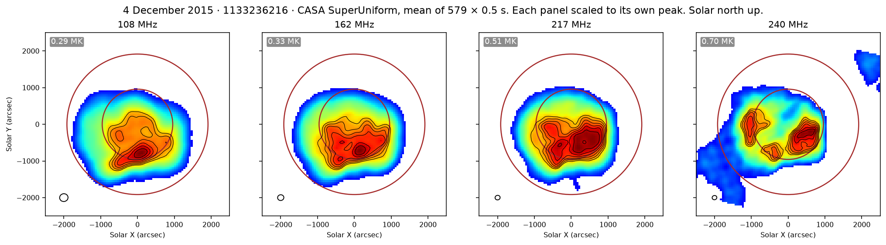

Murchison Widefield Array
Quiet Sun at local noon
GOES-quiet days, Sun within 30 minutes of local noon, 2013–2015.
305quiet noon days
238calibrator within 24 h
2with maps
0imaging in progress
3 December 2015
03:39–03:44 UT
108 / 162 / 217 / 240 MHz. Solar north up.

3 December 2015
03:49–03:54 UT
108 / 162 / 217 / 240 MHz. Solar north up.

4 December 2015
03:49–03:54 UT
108 / 162 / 217 / 240 MHz. Solar north up.

2013 · 42 days
| Date | Time | Elevation | Calibrator | Maps |
|---|---|---|---|---|
| 23 Aug 2013 | 04:08–04:13 UT | 52° | — | Not yet |
| 24 Aug 2013 | 04:08–04:13 UT | 52° | — | Not yet |
| 25 Aug 2013 | 04:08–04:13 UT | 53° | — | Not yet |
| 26 Aug 2013 | 04:08–04:13 UT | 53° | — | Not yet |
| 27 Aug 2013 | 04:08–04:13 UT | 53° | — | Not yet |
| 28 Aug 2013 | 04:08–04:13 UT | 54° | — | Not yet |
| 29 Aug 2013 | 04:08–04:13 UT | 54° | — | Not yet |
| 30 Aug 2013 | 04:08–04:13 UT | 54° | — | Not yet |
| 31 Aug 2013 | 04:08–04:13 UT | 55° | — | Not yet |
| 1 Sep 2013 | 04:08–04:13 UT | 55° | — | Not yet |
| 2 Sep 2013 | 04:08–04:13 UT | 55° | — | Not yet |
| 3 Sep 2013 | 04:08–04:13 UT | 56° | — | Not yet |
| 4 Sep 2013 | 04:08–04:13 UT | 56° | — | Not yet |
| 5 Sep 2013 | 04:37–04:42 UT | 56° | — | Not yet |
| 6 Sep 2013 | 04:08–04:13 UT | 57° | — | Not yet |
| 7 Sep 2013 | 04:08–04:13 UT | 57° | — | Not yet |
| 8 Sep 2013 | 04:08–04:13 UT | 58° | — | Not yet |
| 9 Sep 2013 | 04:08–04:13 UT | 58° | — | Not yet |
| 10 Sep 2013 | 04:08–04:13 UT | 58° | — | Not yet |
| 11 Sep 2013 | 04:08–04:13 UT | 59° | — | Not yet |
| 12 Sep 2013 | 04:08–04:13 UT | 59° | — | Not yet |
| 13 Sep 2013 | 04:08–04:13 UT | 60° | — | Not yet |
| 14 Sep 2013 | 04:08–04:13 UT | 60° | — | Not yet |
| 15 Sep 2013 | 04:08–04:13 UT | 60° | — | Not yet |
| 16 Sep 2013 | 04:08–04:13 UT | 61° | — | Not yet |
| 17 Sep 2013 | 04:08–04:13 UT | 61° | — | Not yet |
| 18 Sep 2013 | 04:08–04:13 UT | 61° | — | Not yet |
| 19 Sep 2013 | 04:08–04:13 UT | 62° | — | Not yet |
| 20 Sep 2013 | 04:08–04:13 UT | 62° | — | Not yet |
| 21 Sep 2013 | 04:08–04:13 UT | 63° | — | Not yet |
| 1 Nov 2013 | 03:00–03:02 UT | 72° | — | Not yet |
| 4 Nov 2013 | 02:56–03:00 UT | 72° | HydA | Not yet |
| 5 Nov 2013 | 02:26–02:30 UT | 67° | HydA | Not yet |
| 6 Nov 2013 | 02:26–02:30 UT | 67° | HydA | Not yet |
| 7 Nov 2013 | 02:26–02:30 UT | 67° | HydA | Not yet |
| 8 Nov 2013 | 02:26–02:30 UT | 67° | HydA | Not yet |
| 14 Nov 2013 | 02:26–02:30 UT | 68° | HydA | Not yet |
| 15 Nov 2013 | 02:26–02:30 UT | 68° | HydA | Not yet |
| 18 Nov 2013 | 02:26–02:30 UT | 68° | HydA | Not yet |
| 19 Nov 2013 | 02:26–02:30 UT | 68° | HydA | Not yet |
| 20 Nov 2013 | 02:26–02:30 UT | 68° | HydA | Not yet |
| 28 Nov 2013 | 05:10–05:14 UT | 73° | HydA | Not yet |
2014 · 95 days
| Date | Time | Elevation | Calibrator | Maps |
|---|---|---|---|---|
| 12 Feb 2014 | 08:05–08:09 UT | 37° | VirA_71 | Not yet |
| 10 Apr 2014 | 04:40–04:44 UT | 55° | HydA | Not yet |
| 20 Apr 2014 | 04:12–04:16 UT | 52° | HydA | Not yet |
| 21 Apr 2014 | 04:12–04:16 UT | 51° | HydA | Not yet |
| 29 Apr 2014 | 04:30–04:34 UT | 49° | HydA | Not yet |
| 4 May 2014 | 04:12–04:16 UT | 47° | HydA | Not yet |
| 10 May 2014 | 04:12–04:16 UT | 46° | HydA | Not yet |
| 11 May 2014 | 04:12–04:16 UT | 45° | HydA | Not yet |
| 11 Jun 2014 | 04:12–04:16 UT | 40° | HydA | Not yet |
| 14 Jun 2014 | 04:16–04:20 UT | 40° | HydA | Not yet |
| 15 Jun 2014 | 04:16–04:20 UT | 40° | HydA | Not yet |
| 16 Jun 2014 | 04:16–04:20 UT | 40° | HydA | Not yet |
| 11 Jul 2014 | 04:20–04:24 UT | 41° | PicA | Not yet |
| 12 Jul 2014 | 04:20–04:24 UT | 41° | PicA | Not yet |
| 19 Jul 2014 | 04:20–04:24 UT | 42° | — | Not yet |
| 20 Jul 2014 | 01:16–01:20 UT | 25° | — | Not yet |
| 26 Aug 2014 | 04:17–04:22 UT | 53° | CenA | Not yet |
| 27 Aug 2014 | 04:16–04:21 UT | 53° | CenA | Not yet |
| 28 Aug 2014 | 04:16–04:21 UT | 54° | CenA | Not yet |
| 29 Aug 2014 | 04:16–04:21 UT | 54° | CenA | Not yet |
| 30 Aug 2014 | 04:10–04:15 UT | 54° | HydA | Not yet |
| 31 Aug 2014 | 04:16–04:20 UT | 55° | — | Not yet |
| 1 Sep 2014 | 01:28–01:32 UT | 37° | HerA_69 | Not yet |
| 2 Sep 2014 | 04:00–04:04 UT | 55° | HerA_145 | Not yet |
| 3 Sep 2014 | 04:16–04:20 UT | 56° | HerA_121 | Not yet |
| 5 Sep 2014 | 04:12–04:16 UT | 56° | HerA_121 | Not yet |
| 6 Sep 2014 | 04:12–04:16 UT | 57° | HerA_121 | Not yet |
| 7 Sep 2014 | 04:12–04:16 UT | 57° | HerA_145 | Not yet |
| 8 Sep 2014 | 04:12–04:16 UT | 58° | 3C444_145 | Not yet |
| 9 Sep 2014 | 04:12–04:16 UT | 58° | 3C444_145 | Not yet |
| 10 Sep 2014 | 04:15–04:20 UT | 58° | CenA_69 | Not yet |
| 11 Sep 2014 | 04:15–04:20 UT | 59° | HydA_93 | Not yet |
| 12 Sep 2014 | 04:08–04:12 UT | 59° | HerA | Not yet |
| 13 Sep 2014 | 04:06–04:11 UT | 59° | HydA | Not yet |
| 14 Sep 2014 | 04:05–04:10 UT | 60° | HydA | Not yet |
| 15 Sep 2014 | 04:05–04:10 UT | 60° | HydA | Not yet |
| 16 Sep 2014 | 04:00–04:05 UT | 61° | HydA | Not yet |
| 17 Sep 2014 | 03:19–03:24 UT | 59° | HydA | Not yet |
| 23 Sep 2014 | 04:27–04:32 UT | 63° | HydA | Not yet |
| 24 Sep 2014 | 04:27–04:32 UT | 63° | HydA | Not yet |
| 25 Sep 2014 | 07:36–07:41 UT | 32° | HerA | Not yet |
| 26 Sep 2014 | 04:21–04:26 UT | 64° | HydA | Not yet |
| 27 Sep 2014 | 04:21–04:26 UT | 64° | HydA | Not yet |
| 28 Sep 2014 | 07:26–07:30 UT | 35° | HerA | Not yet |
| 29 Sep 2014 | 04:15–04:20 UT | 65° | HydA | Not yet |
| 30 Sep 2014 | 04:05–04:10 UT | 66° | HydA | Not yet |
| 1 Oct 2014 | 01:04–01:09 UT | 42° | HydA | Not yet |
| 10 Oct 2014 | 04:02–04:07 UT | 70° | HerA | Not yet |
| 11 Oct 2014 | 04:02–04:06 UT | 70° | HerA | Not yet |
| 12 Oct 2014 | 04:01–04:06 UT | 71° | HerA | Not yet |
| 14 Oct 2014 | 04:01–04:06 UT | 71° | HerA | Not yet |
| 15 Oct 2014 | 04:01–04:06 UT | 72° | HerA | Not yet |
| 16 Oct 2014 | 04:00–04:05 UT | 72° | HerA | Not yet |
| 17 Oct 2014 | 04:00–04:05 UT | 72° | HerA | Not yet |
| 18 Oct 2014 | 04:00–04:05 UT | 73° | HerA | Not yet |
| 19 Oct 2014 | 04:00–04:05 UT | 73° | HerA | Not yet |
| 21 Oct 2014 | 04:19–04:24 UT | 73° | HerA | Not yet |
| 22 Oct 2014 | 04:32–04:36 UT | 72° | — | Not yet |
| 23 Oct 2014 | 00:00–00:04 UT | 33° | — | Not yet |
| 24 Oct 2014 | 03:59–04:04 UT | 75° | HerA | Not yet |
| 25 Oct 2014 | 04:19–04:24 UT | 74° | HerA | Not yet |
| 26 Oct 2014 | 04:32–04:36 UT | 73° | — | Not yet |
| 27 Oct 2014 | 04:20–04:24 UT | 75° | — | Not yet |
| 28 Oct 2014 | 04:16–04:20 UT | 76° | — | Not yet |
| 30 Oct 2014 | 23:56–00:00 UT | 33° | — | Not yet |
| 31 Oct 2014 | 04:20–04:24 UT | 76° | — | Not yet |
| 1 Nov 2014 | 00:00–00:04 UT | 34° | — | Not yet |
| 2 Nov 2014 | 23:56–00:00 UT | 33° | — | Not yet |
| 3 Nov 2014 | 00:00–00:04 UT | 34° | — | Not yet |
| 4 Nov 2014 | 04:16–04:20 UT | 78° | — | Not yet |
| 5 Nov 2014 | 03:58–04:03 UT | 79° | HerA | Not yet |
| 6 Nov 2014 | 00:58–01:03 UT | 48° | CenA | Not yet |
| 7 Nov 2014 | 03:58–04:03 UT | 79° | HerA | Not yet |
| 8 Nov 2014 | 03:58–04:03 UT | 80° | HerA | Not yet |
| 10 Nov 2014 | 03:58–04:03 UT | 80° | HerA | Not yet |
| 11 Nov 2014 | 03:49–03:54 UT | 81° | CenA | Not yet |
| 12 Nov 2014 | 03:59–04:04 UT | 81° | HerA | Not yet |
| 13 Nov 2014 | 03:59–04:04 UT | 81° | HerA | Not yet |
| 14 Nov 2014 | 03:59–04:04 UT | 81° | HerA | Not yet |
| 15 Nov 2014 | 03:59–04:04 UT | 82° | HerA | Not yet |
| 18 Nov 2014 | 04:00–04:05 UT | 82° | HerA | Not yet |
| 19 Nov 2014 | 01:00–01:05 UT | 49° | CenA | Not yet |
| 20 Nov 2014 | 04:00–04:05 UT | 83° | HerA | Not yet |
| 21 Nov 2014 | 04:00–04:05 UT | 83° | HerA | Not yet |
| 24 Nov 2014 | 03:21–03:26 UT | 80° | 3C444 | Not yet |
| 25 Nov 2014 | 01:02–01:06 UT | 50° | CenA | Not yet |
| 28 Nov 2014 | 04:17–04:22 UT | 83° | 3C444 | Not yet |
| 29 Nov 2014 | 04:03–04:08 UT | 85° | 3C444 | Not yet |
| 1 Dec 2014 | 04:03–04:08 UT | 85° | 3C444 | Not yet |
| 3 Dec 2014 | 01:39–01:44 UT | 58° | CenA | Not yet |
| 5 Dec 2014 | 04:05–04:10 UT | 86° | 3C444 | Not yet |
| 6 Dec 2014 | 04:05–04:10 UT | 86° | 3C444 | Not yet |
| 16 Dec 2014 | 04:10–04:15 UT | 86° | 3C444 | Not yet |
| 18 Dec 2014 | 04:21–04:26 UT | 85° | 3C444 | Not yet |
| 19 Dec 2014 | 04:11–04:16 UT | 87° | CenA | Not yet |
2015 · 168 days
| Date | Time | Elevation | Calibrator | Maps |
|---|---|---|---|---|
| 26 Feb 2015 | 06:03–06:08 UT | 60° | PKS2356-61 | Not yet |
| 27 Feb 2015 | 03:42–03:47 UT | 69° | 3C444 | Not yet |
| 28 Feb 2015 | 04:27–04:32 UT | 71° | 3C444 | Not yet |
| 26 Mar 2015 | 03:46–03:50 UT | 60° | 3C444 | Not yet |
| 27 Mar 2015 | 04:45–04:50 UT | 60° | PicA | Not yet |
| 30 Mar 2015 | 04:08–04:13 UT | 60° | HerA | Not yet |
| 31 Mar 2015 | 03:42–03:47 UT | 58° | PicA | Not yet |
| 1 Apr 2015 | 06:34–06:38 UT | 44° | PicA | Not yet |
| 2 Apr 2015 | 03:35–03:40 UT | 57° | PicA | Not yet |
| 3 Apr 2015 | 03:31–03:36 UT | 56° | PicA | Not yet |
| 6 Apr 2015 | 01:10–01:15 UT | 35° | 3C444 | Not yet |
| 7 Apr 2015 | 03:26–03:31 UT | 55° | 3C444 | Not yet |
| 8 Apr 2015 | 03:22–03:27 UT | 54° | 3C444 | Not yet |
| 9 Apr 2015 | 03:18–03:23 UT | 53° | 3C444 | Not yet |
| 10 Apr 2015 | 03:14–03:19 UT | 53° | 3C444 | Not yet |
| 13 Apr 2015 | 03:15–03:20 UT | 52° | PicA | Not yet |
| 14 Apr 2015 | 03:11–03:16 UT | 51° | PicA | Not yet |
| 15 Apr 2015 | 05:38–05:42 UT | 48° | PicA | Not yet |
| 16 Apr 2015 | 03:04–03:09 UT | 50° | PicA | Not yet |
| 17 Apr 2015 | 01:14–01:19 UT | 34° | 3C444 | Not yet |
| 20 Apr 2015 | 03:07–03:12 UT | 49° | PicA | Not yet |
| 24 Apr 2015 | 04:03–04:08 UT | 51° | 3C444 | Not yet |
| 27 Apr 2015 | 04:12–04:17 UT | 50° | PicA | Not yet |
| 28 Apr 2015 | 06:17–06:18 UT | 39° | HydA | Not yet |
| 29 Apr 2015 | 02:48–02:53 UT | 45° | PKS2356-61 | Not yet |
| 30 Apr 2015 | 04:07–04:12 UT | 49° | 3C444 | Not yet |
| 1 May 2015 | 04:02–04:07 UT | 48° | 3C444 | Not yet |
| 2 May 2015 | 04:09–04:14 UT | 48° | 3C444 | Not yet |
| 3 May 2015 | 07:02–07:06 UT | 30° | PicA | Not yet |
| 4 May 2015 | 04:06–04:11 UT | 47° | 3C444 | Not yet |
| 5 May 2015 | 04:01–04:06 UT | 47° | 3C444 | Not yet |
| 6 May 2015 | 04:51–04:56 UT | 46° | PicA | Not yet |
| 7 May 2015 | 04:21–04:26 UT | 46° | PicA | Not yet |
| 8 May 2015 | 03:56–04:01 UT | 46° | 3C444 | Not yet |
| 10 May 2015 | 04:08–04:13 UT | 46° | 3C444 | Not yet |
| 11 May 2015 | 04:01–04:06 UT | 45° | 3C444 | Not yet |
| 14 May 2015 | 03:51–03:56 UT | 45° | 3C444 | Not yet |
| 15 May 2015 | 03:51–03:56 UT | 44° | 3C444 | Not yet |
| 18 May 2015 | 03:59–04:04 UT | 44° | 3C444 | Not yet |
| 19 May 2015 | 03:55–04:00 UT | 44° | PKS2356-61 | Not yet |
| 20 May 2015 | 01:11–01:16 UT | 27° | PKS2356-61 | Not yet |
| 21 May 2015 | 03:56–04:01 UT | 43° | PKS2356-61 | Not yet |
| 22 May 2015 | 03:46–03:51 UT | 43° | PKS2356-61 | Not yet |
| 25 May 2015 | 04:00–04:04 UT | 42° | PKS2356-61 | Not yet |
| 26 May 2015 | 03:56–04:00 UT | 42° | PKS2356-61 | Not yet |
| 27 May 2015 | 03:52–03:57 UT | 42° | PKS2356-61 | Not yet |
| 28 May 2015 | 03:48–03:53 UT | 42° | PKS2356-61 | Not yet |
| 29 May 2015 | 03:44–03:49 UT | 41° | PKS2356-61 | Not yet |
| 1 Jun 2015 | 04:03–04:08 UT | 41° | PKS2356-61 | Not yet |
| 2 Jun 2015 | 04:00–04:04 UT | 41° | PKS2356-61 | Not yet |
| 3 Jun 2015 | 01:31–01:36 UT | 28° | PKS2356-61 | Not yet |
| 4 Jun 2015 | 03:52–03:57 UT | 41° | PKS2356-61 | Not yet |
| 5 Jun 2015 | 03:28–03:33 UT | 40° | PKS2356-61 | Not yet |
| 8 Jun 2015 | 04:08–04:12 UT | 40° | PKS2356-61 | Not yet |
| 9 Jun 2015 | 06:24–06:29 UT | 31° | HydA | Not yet |
| 10 Jun 2015 | 04:10–04:15 UT | 40° | PKS2356-61 | Not yet |
| 11 Jun 2015 | 03:56–04:01 UT | 40° | PicA | Not yet |
| 12 Jun 2015 | 03:52–03:57 UT | 40° | PicA | Not yet |
| 15 Jun 2015 | 04:04–04:09 UT | 40° | PicA | Not yet |
| 16 Jun 2015 | 03:45–03:50 UT | 40° | PicA | Not yet |
| 17 Jun 2015 | 03:56–04:01 UT | 40° | PicA | Not yet |
| 18 Jun 2015 | 03:48–03:52 UT | 40° | PicA | Not yet |
| 19 Jun 2015 | 01:29–01:34 UT | 26° | PicA | Not yet |
| 1 Jul 2015 | 06:21–06:26 UT | 31° | HydA | Not yet |
| 2 Jul 2015 | 03:52–03:56 UT | 40° | PicA | Not yet |
| 3 Jul 2015 | 03:59–04:04 UT | 40° | PicA | Not yet |
| 6 Jul 2015 | 04:08–04:13 UT | 41° | PicA | Not yet |
| 7 Jul 2015 | 04:04–04:09 UT | 41° | PicA | Not yet |
| 14 Jul 2015 | 04:14–04:19 UT | 42° | PicA | Not yet |
| 15 Jul 2015 | 04:10–04:15 UT | 42° | PicA | Not yet |
| 16 Jul 2015 | 04:07–04:11 UT | 42° | PicA | Not yet |
| 17 Jul 2015 | 04:03–04:08 UT | 42° | PicA | Not yet |
| 20 Jul 2015 | 04:13–04:18 UT | 43° | PicA | Not yet |
| 21 Jul 2015 | 03:49–03:54 UT | 42° | PicA | Not yet |
| 22 Jul 2015 | 02:10–02:15 UT | 34° | PicA | Not yet |
| 23 Jul 2015 | 03:21–03:26 UT | 41° | PicA | Not yet |
| 24 Jul 2015 | 03:57–04:02 UT | 43° | PicA | Not yet |
| 27 Jul 2015 | 04:13–04:18 UT | 44° | CenA | Not yet |
| 28 Jul 2015 | 04:10–04:15 UT | 44° | PicA | Not yet |
| 29 Jul 2015 | 04:06–04:11 UT | 44° | PicA | Not yet |
| 30 Jul 2015 | 01:27–01:32 UT | 29° | PicA | Not yet |
| 31 Jul 2015 | 03:58–04:03 UT | 45° | PicA | Not yet |
| 3 Aug 2015 | 04:13–04:18 UT | 46° | PicA | Not yet |
| 4 Aug 2015 | 04:09–04:14 UT | 46° | PicA | Not yet |
| 6 Aug 2015 | 04:01–04:05 UT | 46° | PicA | Not yet |
| 7 Aug 2015 | 04:00–04:05 UT | 47° | PicA | Not yet |
| 11 Aug 2015 | 03:50–03:55 UT | 47° | PicA | Not yet |
| 12 Aug 2015 | 03:50–03:55 UT | 48° | PicA | Not yet |
| 13 Aug 2015 | 03:50–03:55 UT | 48° | PicA | Not yet |
| 14 Aug 2015 | 03:44–03:49 UT | 48° | PicA | Not yet |
| 17 Aug 2015 | 03:39–03:44 UT | 49° | PicA | Not yet |
| 18 Aug 2015 | 03:39–03:43 UT | 49° | PicA | Not yet |
| 20 Aug 2015 | 01:18–01:23 UT | 32° | PicA | Not yet |
| 21 Aug 2015 | 03:43–03:48 UT | 50° | CenA | Not yet |
| 24 Aug 2015 | 04:17–04:22 UT | 52° | CenA | Not yet |
| 25 Aug 2015 | 04:17–04:22 UT | 52° | CenA | Not yet |
| 26 Aug 2015 | 04:17–04:22 UT | 53° | CenA | Not yet |
| 27 Aug 2015 | 04:16–04:21 UT | 53° | CenA | Not yet |
| 28 Aug 2015 | 04:11–04:16 UT | 53° | HydA | Not yet |
| 31 Aug 2015 | 04:10–04:15 UT | 55° | HydA | Not yet |
| 2 Sep 2015 | 06:59–07:04 UT | 36° | CenA | Not yet |
| 3 Sep 2015 | 04:04–04:09 UT | 56° | HydA | Not yet |
| 4 Sep 2015 | 04:04–04:09 UT | 56° | HydA | Not yet |
| 7 Sep 2015 | 04:13–04:18 UT | 57° | CenA | Not yet |
| 8 Sep 2015 | 04:13–04:17 UT | 57° | CenA | Not yet |
| 9 Sep 2015 | 04:12–04:17 UT | 58° | CenA | Not yet |
| 10 Sep 2015 | 04:12–04:17 UT | 58° | CenA | Not yet |
| 11 Sep 2015 | 04:11–04:16 UT | 59° | CenA | Not yet |
| 14 Sep 2015 | 04:05–04:10 UT | 60° | HydA | Not yet |
| 15 Sep 2015 | 06:55–07:00 UT | 39° | CenA | Not yet |
| 16 Sep 2015 | 04:05–04:10 UT | 61° | HydA | Not yet |
| 17 Sep 2015 | 03:59–04:04 UT | 61° | HydA | Not yet |
| 18 Sep 2015 | 03:29–03:34 UT | 60° | HydA | Not yet |
| 21 Sep 2015 | 04:08–04:13 UT | 62° | CenA | Not yet |
| 22 Sep 2015 | 04:08–04:13 UT | 63° | CenA | Not yet |
| 23 Sep 2015 | 04:07–04:12 UT | 63° | CenA | Not yet |
| 24 Sep 2015 | 04:07–04:12 UT | 64° | CenA | Not yet |
| 25 Sep 2015 | 04:07–04:11 UT | 64° | CenA | Not yet |
| 28 Sep 2015 | 04:05–04:10 UT | 65° | CenA | Not yet |
| 29 Sep 2015 | 04:05–04:10 UT | 66° | CenA | Not yet |
| 30 Sep 2015 | 01:05–01:10 UT | 42° | HydA | Not yet |
| 1 Oct 2015 | 03:59–04:04 UT | 66° | HydA | Not yet |
| 2 Oct 2015 | 03:59–04:04 UT | 67° | HydA | Not yet |
| 5 Oct 2015 | 04:03–04:08 UT | 68° | CenA | Not yet |
| 6 Oct 2015 | 04:03–04:08 UT | 68° | CenA | Not yet |
| 7 Oct 2015 | 04:03–04:08 UT | 69° | HydA | Not yet |
| 9 Oct 2015 | 04:12–04:17 UT | 69° | HerA | Not yet |
| 12 Oct 2015 | 01:01–01:06 UT | 44° | HydA | Not yet |
| 13 Oct 2015 | 01:01–01:06 UT | 44° | HydA | Not yet |
| 15 Oct 2015 | 04:01–04:05 UT | 72° | HerA | Not yet |
| 20 Oct 2015 | 04:00–04:05 UT | 73° | HerA | Not yet |
| 21 Oct 2015 | 03:59–04:04 UT | 74° | HydA | Not yet |
| 22 Oct 2015 | 03:59–04:04 UT | 74° | HerA | Not yet |
| 23 Oct 2015 | 03:29–03:34 UT | 73° | HydA | Not yet |
| 27 Oct 2015 | 02:39–02:43 UT | 67° | HydA | Not yet |
| 28 Oct 2015 | 03:53–03:58 UT | 76° | HydA | Not yet |
| 29 Oct 2015 | 03:53–03:58 UT | 77° | HydA | Not yet |
| 30 Oct 2015 | 03:48–03:53 UT | 77° | CenA | Not yet |
| 2 Nov 2015 | 03:43–03:48 UT | 78° | CenA | Not yet |
| 3 Nov 2015 | 03:43–03:48 UT | 78° | CenA | Not yet |
| 4 Nov 2015 | 03:38–03:43 UT | 78° | CenA | Not yet |
| 5 Nov 2015 | 03:38–03:43 UT | 78° | CenA | Not yet |
| 6 Nov 2015 | 03:33–03:38 UT | 78° | CenA | Not yet |
| 9 Nov 2015 | 03:58–04:03 UT | 80° | HerA | Not yet |
| 10 Nov 2015 | 04:13–04:18 UT | 79° | HerA | Not yet |
| 11 Nov 2015 | 03:59–04:03 UT | 81° | HerA | Not yet |
| 12 Nov 2015 | 03:04–03:09 UT | 75° | CenA | Not yet |
| 13 Nov 2015 | 02:54–02:59 UT | 73° | CenA | Not yet |
| 16 Nov 2015 | 03:59–04:04 UT | 82° | CenA | Not yet |
| 17 Nov 2015 | 03:59–04:04 UT | 82° | HerA | Not yet |
| 18 Nov 2015 | 04:00–04:05 UT | 82° | HerA | Not yet |
| 19 Nov 2015 | 04:00–04:05 UT | 83° | HerA | Not yet |
| 20 Nov 2015 | 03:40–03:45 UT | 82° | HerA | Not yet |
| 23 Nov 2015 | 04:01–04:06 UT | 83° | HerA | Not yet |
| 24 Nov 2015 | 04:56–05:01 UT | 75° | HerA | Not yet |
| 25 Nov 2015 | 04:01–04:06 UT | 84° | 3C444 | Not yet |
| 27 Nov 2015 | 03:57–04:02 UT | 84° | CenA | Not yet |
| 30 Nov 2015 | 03:53–03:58 UT | 85° | CenA | Not yet |
| 1 Dec 2015 | 03:48–03:53 UT | 84° | CenA | Not yet |
| 2 Dec 2015 | 04:04–04:09 UT | 85° | 3C444 | Not yet |
| 3 Dec 2015 | 03:49–03:54 UT | 85° | CenA | Mapped |
| 4 Dec 2015 | 03:49–03:54 UT | 85° | CenA | Mapped |
| 8 Dec 2015 | 03:36–03:41 UT | 83° | CenA | Not yet |
| 9 Dec 2015 | 03:37–03:41 UT | 83° | CenA | Not yet |
| 10 Dec 2015 | 03:37–03:42 UT | 83° | CenA | Not yet |
| 11 Dec 2015 | 03:32–03:37 UT | 82° | CenA | Not yet |
| 14 Dec 2015 | 03:29–03:34 UT | 81° | CenA | Not yet |
| 15 Dec 2015 | 01:14–01:19 UT | 51° | CenA | Not yet |